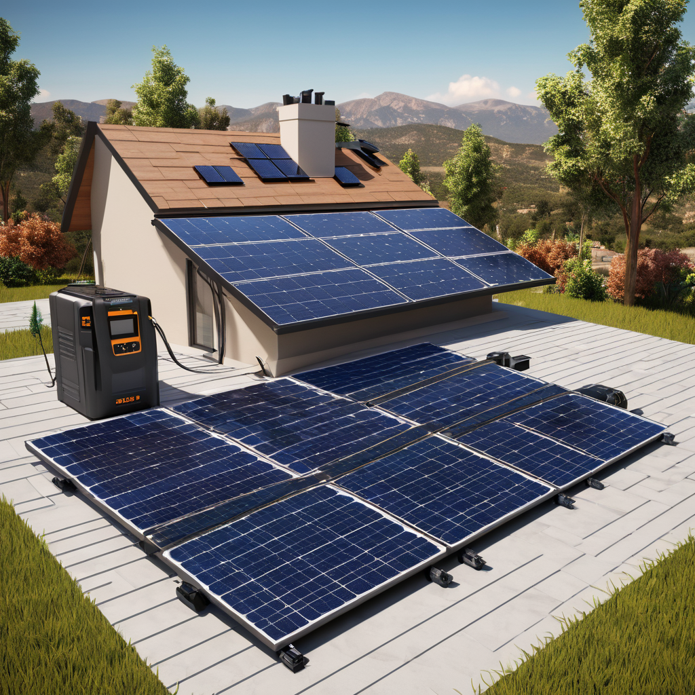
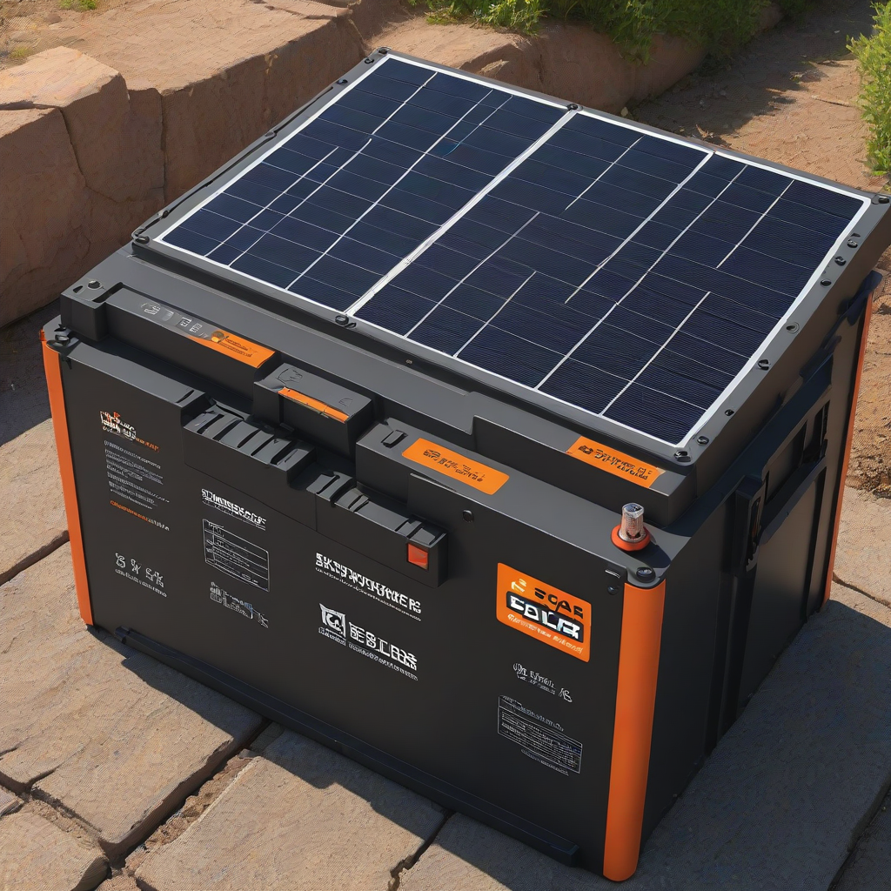
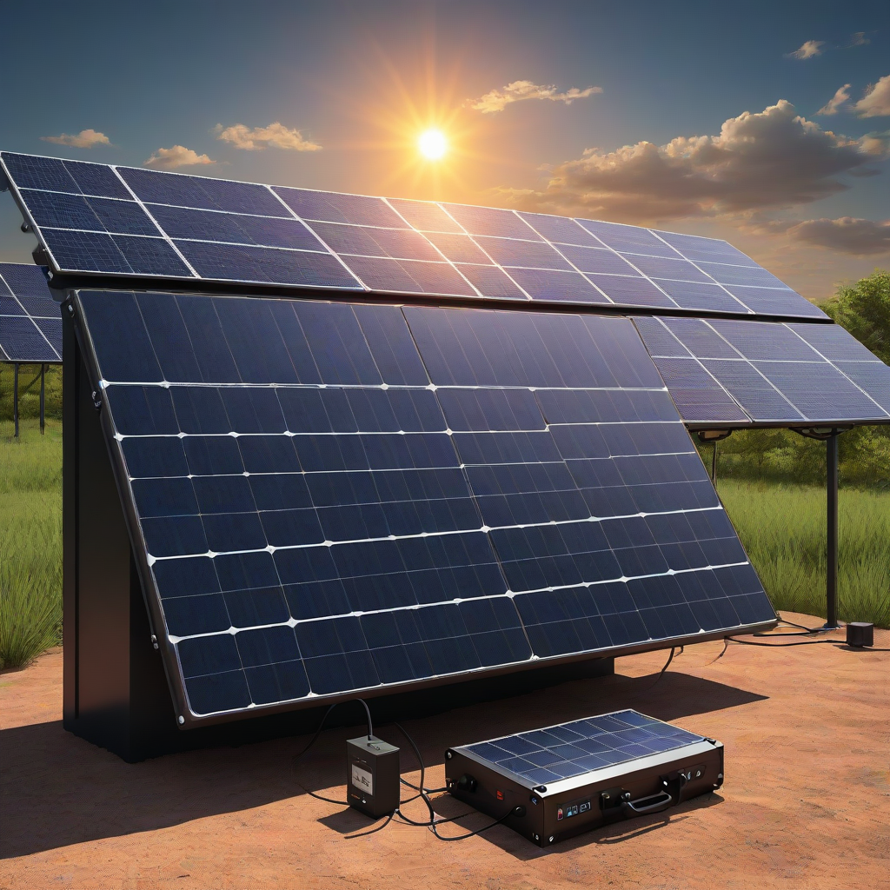

Best solar batteries for home: Full Comparison (2026)
Learn everything about best solar batteries for home in 2026. Costs, comparisons, expert tips for US homeowners.
Updated 2026-05-29. Informational only. Consult a licensed solar installer for your specific project.

When the grid goes down—or you simply want more control over your energy use—your solar panels alone won’t keep the lights on past sunset. That’s where solar batteries come in. In 2026, the home battery market is more mature, more affordable, and more intelligent than ever before. With over 1.2 million residential solar+storage installations projected by the end of the year (SEIA), choosing the *best solar batteries for home 2026* means balancing performance, cost, compatibility, and future-proofing.
But not all batteries are created equal. From lithium iron phosphate (LFP) chemistries gaining traction for safety and longevity to smart inverters enabling grid-forming capabilities, the options have evolved beyond simple energy storage. This guide cuts through the noise with up-to-date 2026 pricing, performance specs, and real-world insights so you can pick the system that matches *your* home, budget, and goals.
What is “Best” for Home Solar Batteries in 2026—and Why It Matters

Key Differences Explained
The “best” solar battery depends heavily on your specific needs—but fundamentally, modern home batteries differ in four key areas:
Chemistry: Most still use lithium nickel manganese cobalt oxide (NMC), but lithium iron phosphate (LFP) is surging in 2026 due to longer cycle life, improved thermal stability, and reduced cobalt dependence.
Coupling type: DC-coupled systems (battery charged directly from solar) are more efficient for new installations, while AC-coupled units (like the Powerwall+) work best with existing solar.
Usable capacity: Ranges from 5–18 kWh per unit—though many systems stack multiple batteries for scalability.
Integration depth: Some batteries (e.g., Powerwall) tie into the inverter and require specific hardware; others (e.g., PWRcell) are standalone AC units with broader compatibility.
Who Each Option Is Best For
Overview
Below are the top five home batteries available in the U.S. in 2026, ranked by overall value and performance:
Tesla Powerwall+ – Best for Tesla ecosystem users and seamless whole-home backup
Enphase IQ Battery 10 – Best for modular, scalable, and future-ready installations
Generac PWRcell – Best for high-capacity backup and AC-coupled retrofits
SolarEdge Home Battery 15.4 kWh – Best for SolarEdge panel/inverter owners
LG RESU PRIME 10.2 kWh – Best for compact installations and high cycle life
Main Differences
Here’s how these top contenders stack up across critical features:
Round-trip efficiency: 85–95% (LFP batteries like Enphase and PWRcell lead at 92–94%)
Warranty: 10 years or 7,000–12,000 cycles (LFP models consistently score higher cycle counts)
Expandability: Enphase supports up to 10 batteries; Powerwall maxes at 10 units (135 kWh total); PWRcell supports 3–6 units
Grid-forming capability: Critical for off-grid or islanding during outages—now standard in Enphase IQ 8H+ and Tesla Powerwall+ (2026 model only)
Decision Factors
Ask yourself these questions before choosing:
Do you already have solar? If yes, is it Tesla, SolarEdge, or another inverter?
How many critical circuits do you need to back up? (Kitchen? HVAC? EV charger?)
Do yo

u want to aim for net-zero energy year-round, or just backup during storms?
While the Enphase IQ Battery 10 has the lowest per-unit price ($4,000–$8,000), total system cost depends on your inverter setup. Enphase requires their IQ 8H+ inverter for grid-forming—adding ~$1,200–$1,800 per string. Tesla Powerwall+ includes its integrated inverter, but the high-end model (with backup gateway) pushes pricing to $15,500+ for a single unit. Generac’s modular PWRcell starts at ~$8,500 for a 6 kWh unit but may need two for whole-home backup, bringing it closer to $16,000 installed.
Performance Comparison
In 2026, real-world performance is measured by:
Discharge power: Enphase and LG RESU PRIME lead with 3.8 kW continuous (7.2 kW peak), while Powerwall+ delivers 5 kW continuous (7 kW peak)—ideal for heavy startup loads like AC units.
Depth of discharge (DoD): All 2026 models offer 100% DoD (no degradation penalty), unlike older NMC units capped at 90%.
Round-trip efficiency: LFP batteries (Enphase, PWRcell, LG) consistently outperform NMC by 3–5%—meaning more of your solar gets stored and reused.
Cost Breakdown
Equipment Costs
Here’s a realistic 2026 equipment cost estimate for a typical 6-kW home solar + 1–2 battery system:
6-kW solar array (30 panels @ $2.80/W installed): $16,800
Battery (e.g., Enphase IQ Battery 10 × 2): $12,000
Inverter upgrade (if needed): $1,500–$2,500
Backup gateway / communications: $500–$1,000
Total equipment: $30,800–$32,800
Keep in mind that the 30% federal ITC tax credit applies to battery storage installed with solar—so your out-of-pocket drops by ~$9,240–$9,840. IRS guidance for 2026 confirms that standalone battery retrofits (added after solar) still qualify as long as charged by solar.
Installation Costs
Installation varies by region and complexity:
New construction (pre-wired for storage): $1,500–$2,500
Standard retrofit (one battery, single-phase): $2,500–$4,000
High-capacity or three-phase systems: $4,000–$7,000+
Enphase and LG systems often cost less to install—they’re plug-and-play with existing inverters. Tesla and Generac may require panel upgrades or additional breakers, adding labor time.
Long-Term Savings
Initial Investment
For a typical 6-kW solar + 20-kWh storage system (2 Enphase IQ Battery 10s):
Simple payback period:10–12 years (before battery degradation)
ROI over 15 years: ~5–7% annual return—beating most savings accounts and bonds, especially when factoring in increased home value and energy resilience.
Pros and Cons
Tesla Powerwall+
Pros: Seamless Tesla ecosystem integration; 10-year warranty with 100% DoD; grid-forming capability in 2026 model; sleek design; whole-home backup ready.
Cons: Highest per-unit cost; NMC chemistry (fewer cycles than LFP); limited to Tesla installers in many areas; no expandability until after purchase.
Best for: Tesla owners, new-build homes with Tesla inverters, whole-home backup priority.
Enphase IQ Battery 10
Pros: Lowest entry cost; modular (start with one, add later); 94% efficiency; 10,000-cycle LFP warranty; works with most Enphase inverters.
Cons: Requires IQ 8H+ for grid-forming (newer inverters only); smaller per-unit capacity (10.4 kWh); installer network still growing in rural areas.
Best for: Budget-conscious homeowners, future scalability, solar-first installations.
Generac PWRcell
Pros: Highest per-unit capacity (6 kWh); LFP chemistry; 100% DoD; AC-coupled (works with any solar); built-in backup controller.
Cons: Bulky design; limited installer network (~1,200 dealers); no grid-forming without firmware update (2026 expected).
Best for: Large homes, older solar systems, high backup load needs (e.g., heat pumps, well pumps).
Cons: No grid-forming; limited U.S. installer support; no native backup control (requires external inverter).
Best for: Small homes, retrofits with space constraints, efficiency-focused buyers.
Frequently Asked Questions
Which solar battery is better in 2026?
For most people, the Tesla Powerwall+ remains the top choice due to reliability, warranty, and whole-home backup capability. But if you already have Enphase or want to start small and scale, the Enphase IQ Battery 10 offers better value and future-proofing. Always match the battery to your inverter and backup needs—not just price.
What’s the biggest cost difference between batteries?
The biggest gap isn’t just sticker price—it’s total installed cost. Enphase starts cheaper, but adding an IQ 8H+ inverter and gateway adds $2,000+ to the system. Tesla’s higher upfront cost often includes everything in one package. Always get three quotes and ask: “What’s the all-in, turnkey price after ITR?”
Is installation difficult?
No—installation is standardized and safe, but complexity varies:
Enphase: Plug-and-play with IQ 8H+—typically 2–4 hours.
All require a licensed electrician and city permit. Most installs are completed in one day.
Do batteries work during a blackout?
Yes—but only if they have backup capability. Not all batteries are created equal here:
Grid-forming batteries (Powerwall+, Enphase IQ 8H+, PWRcell) operate off-grid during blackouts—no grid signal needed.
Standard batteries (older models, some LG/SE units) shut down during outages unless paired with a hybrid inverter that supports islanding.
If blackout resilience is critical, prioritize grid-forming capability—now standard in 2026’s top-tier units.
How long do home solar batteries last?
LFP batteries (Enphase, PWRcell, LG) are rated for 7,500–10,000 cycles to 80% capacity—roughly 15–20 years in daily use. NMC units (Tesla, SolarEdge) average 7,000 cycles (~10–12 years). But degradation is slow: most warranties only cover capacity down to 70%, and many batteries outlast their warranty.
Can I add more batteries later?
Yes—modularity is a key 2026 advantage:
Enphase: Add up to 10 units (104 kWh) with one inverter.
Tesla: Up to 10 Powerwalls, but all must be added at installation (retrofit adds complexity).
Generac: Add cells anytime (up to 6).
Always confirm expandability with your installer—some systems require a future-proof gateway or inverter license.
Conclusion
Best for Most People: Tesla Powerwall+
If you want one reliable, integrated system with proven whole-home backup and strong warranty support, the Powerwall+ remains the gold standard in 2026. It’s the easiest to configure and deploy—especially if you’re building new or replacing an older inverter. Just be prepared for the premium price tag.
Budget Pick: Enphase IQ Battery 10
For 70% of homeowners, the Enphase IQ Battery 10 is the smarter long-term choice. Lower entry cost, LFP chemistry, and true scalability mean you start small (or add over time) without sacrificing performance or grid-forming capability. Pair it with an IQ 8H+ inverter for future-proofing.
Premium Pick: Generac PWRcell
For large homes, off-grid hybrids, or those with legacy solar, Generac PWRcell delivers unmatched capacity per unit and high backup capability. Its AC-coupled design works with almost any solar array, and its LFP chemistry ensures longevity.
Action Steps for You
Take inventory: What’s your inverter brand? How many critical circuits do you need?
Get 3 quotes: Ask for “all-in, after-ITC” pricing—not just battery cost.
Writer and researcher specializing in residential solar energy systems, costs, and installation guides for US homeowners.
All data verified against 2026 industry sources.
✓ Data verified 2026✓ Updated: 2026-05-29✓ Editorial transparency